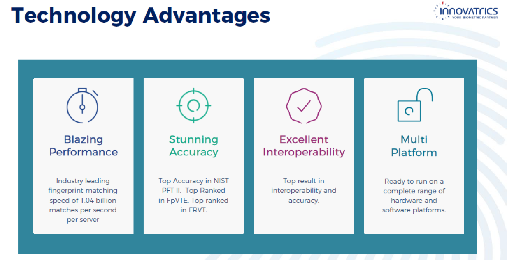
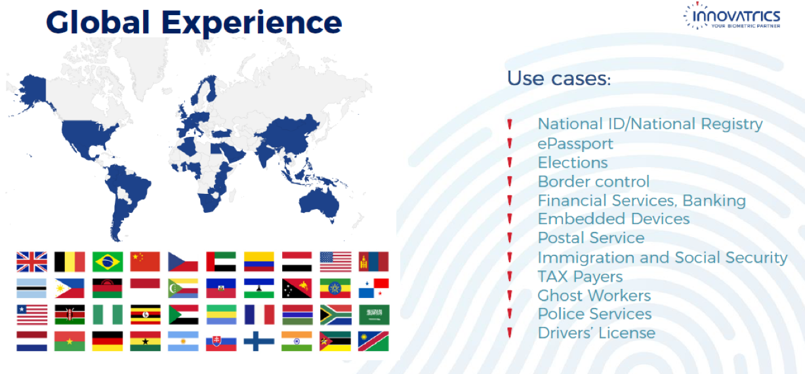

Innovatrics
國際級大廠Innovatrics是一間主力專精在生物辨識技術的公司，主要產品包含指紋辨識、臉部辨識並且透過SDK等方式，提供給企業最直接的核心技術加值應用，讓AI不再只是紙上談兵。
成立於2004的Innovatrics, 是國際認證的AI廠商，前後一共獲得了10多個國際上對於AI或者科技產品的認證，包含(NIST MINEX II、NIST MINEX III、NIST FpVTE、NIST PFT II、NIST FRVT、FBI、STQC、NIST MINEX 04,MINEX II, MINEX III、FVC 2004, 2006、Intel)，並且在世界各地共70+國以各種形式的應用落地成形。
由於優異的AI核心引擎與技術整合，Innovatrics的產品辨識度可以高達99.8%，並且以最新的應用趨勢作為發想，不論是雲端或者行動裝置等都可以一次滿足。應用的情境上包含了門禁控制、VIP/黑名單應用、智慧零售、AI金融等。聚達透過完整的技術平台將Innovatrics的引擎整合成為客戶最需要的使用情境產品。
 2